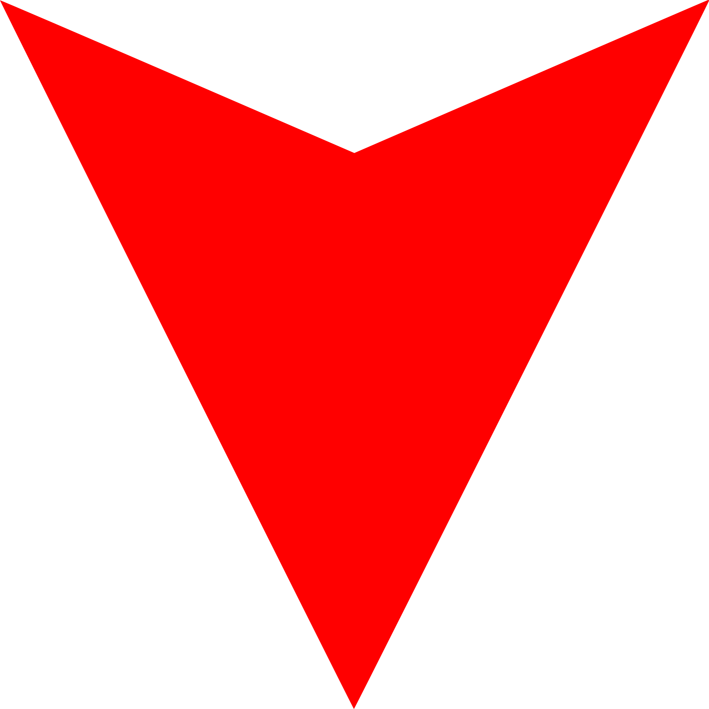

Picture List
A Picture List helps us attempt to describe the current list update in the form of a picture structured like a tier list.
There are two metrics to consider when using our picture list:
1. Value
The current way of assigning numerical values to items in Flee the Facility.
2. Change in Value
Changes in Value from the previous list updates will be denoted with either a green arrow (to represent an increase in value) or a red arrow (to represent a decrease in value). These arrows are small and are placed next to the assigned Value.
Stability Tags
Stability Tags are useful for giving the community our insight on what direction we believe an item is heading. This does not mean that everyone follows what the stability states, it is simply to reflect what most people think.
Here is a list of stability tags used on our value list
Rising:
Items with this stability are rapidly gaining value.
Improving:
Items with this stability are slowly gaining value.
Doing Well:
This means that an item is thriving as it receives good trades, which may lead to a potential rise in value.
Stable:
This means that an item has no movement currently.
Fluctuating:
This means that an item has a confusing value range. Its movement is unpredictable due to variations in overpays, underpays, and base value.
Unstable:
This means that an item has a lot of movement. Unstable items are risky investments and it is wise for new traders to avoid them.
Struggling:
This means that an item is struggling to receive trades due to a decrease in demand, which may lead to a potential drop in value.
Receding:
Items with this stability are slowly losing value.
Dropping:
Items with this stability are rapidly losing value.
Status Tags
Status Tags are useful for giving the community more insight on sets that go beyond the assigned stabilty. Status is how well the set is doing overall, considering the current value, the offers it usually gets, and the demand around the set. We may add more tags like these if necessary.
Here is a list of stability tags used on our value list
Overpaid For ➕:
This icon means that the set is stable and could get their listed value, but may get slightly more than the base value of the set.
Underpaid For ➖:
This icon means that the set is stable and could get their listed value, but may get slightly less than the base value of the set.
Niche 💎:
This icon is used for items that are hard to get, as there are very few people actively trading these items. These items usually get their face value, but may also get overpays due to these items being hard to come by. Usually, there would be only very few people looking for these items.
- Removed Color Tags